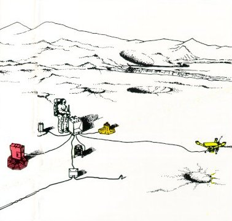
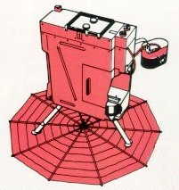
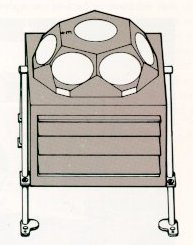
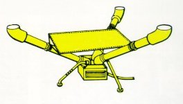
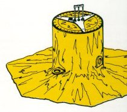

|  |
| An ALSEP is a group of geophysical instruments arrayed about a central station, as in the accompanying sketch. Each ALSEP has a different set of experiments. Power is supplied by a Radioisotope Thermoelectric Generator. Radio communication for the transmission of experiment data and the receipt of instrument adjustment commands is maintained through a rod-shaped antenna pointed in the Earth's general direction. |
|  | The Suprathermal Ion Detector Experiment (SIDE) measures the energy and mass of the positive ions that result from the ionization of gases near the lunar surface by the solar wind or ultraviolet radiation. The Cold Cathode Gauge Experiment (CCGE) measures changes in the extremely low concentrations of gas in the lunar atmosphere. The electronics for the CCGE are housed in the SIDE. |
|  | The Solar-Wind Spectrometer experiment uses seven Faraday-cup sensors to measure the energy spectra of charged particles that strike it from various directions. Because the Moon, unlike the Earth, is not protected from the solar-wind plasma by a magnetic shield, the instrument can detect subtle variations in the wind's intensity and direction. |
|  | Lunar Surface Magnetometers, operating at three ALSEP stations, have simultaneously measured the global response of the Moon to fluctuations in large-scale solar and terrestrial magnetic fields. By considering these responses in conjunction with the freespace magnetic data from the lunar satellite, Explorer 35, scientists have estimated rock temperatures (which affect electrical conductivity) deep in the lunar interior. |
|  | The Passive Seismic Experiment uses four extremely sensitive seismometers to measure lunar surface vibrations, free oscillations, and tidal variations in surface tilt. Three long-period seismometers are mounted orthogonally to measure wave motions with periods between 1/2 and 250 seconds, while the short-period seismometer measures vertical motions with periods between 1/20 and 20 seconds. The electronics are housed in the ALSEP central station. The thermal shroud isolates the sensor and a patch of ground 5 feet in diameter from the temperature extremes of the lunar day and night. |